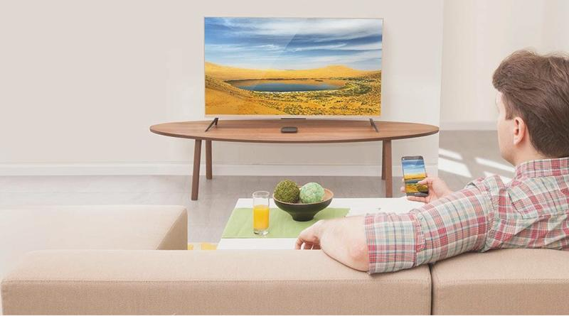
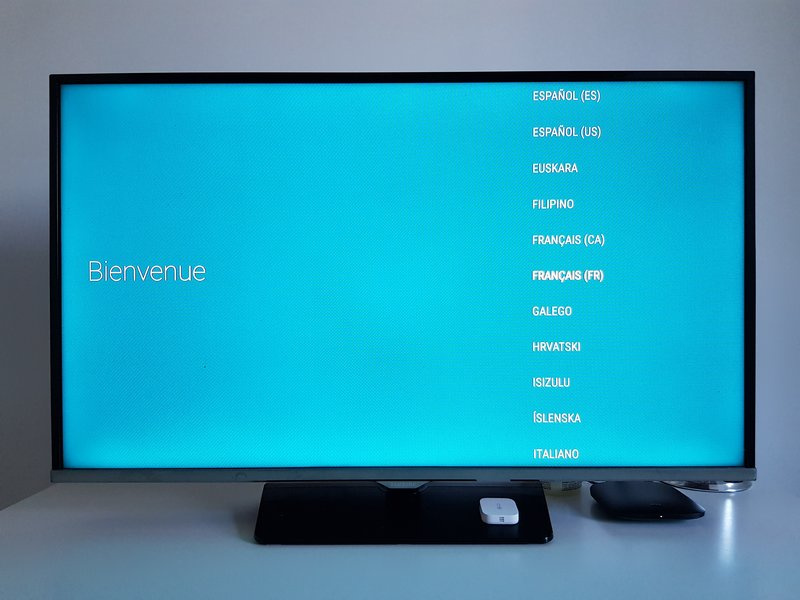
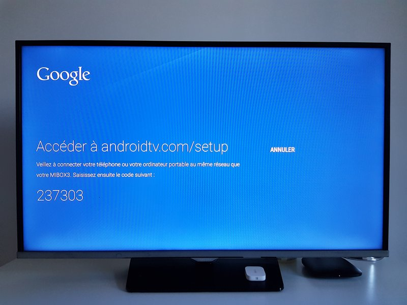

Test Xiaomi Mi Box 3 : adoptez Android TV pour 60 euros
Présentation
Bien que certains téléviseurs intègrent Android TV
nativement, ce n'est pas le cas de tous les modèles,
certaines TV ont un OS "fait maison" et surtout tout le
monde n'a pas une "Smart TV" ! C'est là qu'interviennent les
Box TV, appelées également Box multimédia. Il en existe des
dizaines de modèles sur le net... Le produit proposé par
Xiaomi et qui fait aujourd'hui l'objet de ce test, est
surement l'un des plus répandu.
Dans cet article, je vous donne mon avis sur la Xiaomi Mi
Box 3 après plusieurs semaines d'utilisation.
Caractéristiques Xiaomi Mi Box 3 :
- Interface vidéo : HDMI
- Interface audio : combo Jack/SPDIF
-
Connexion réseau : Wi-Fi (802.11a/b/g/n/ac) - Pas de
RJ45
- Connexion Bluetooth / Infrarouge : Oui / Oui
- Port(s) USB : 1 x USB 2.0
- Lecteur de cartes : Non
- Tuner TNT : Non
- Télécommande : Oui
- Système : Android TV 6.0+
- Dimensions : 101 x 101 x 19.5 mm
Avant de poursuivre ce test sur l'utilisation de la Box
Xiaomi, voici quelques informations concernant les
alternatives à cette box, sa connectique, son espace de
stockage ainsi que le fonctionnement de la télécommande.
Initialisation de la Xiaomi Mi Box 3
Après avoir connecté votre Box TV au téléviseur, il va
falloir l'initialiser. Ceci est relativement simple, la
première étape consiste à établir la connexion Bluetooth
entre la télécommande et la Box. Ensuite, il suffit de se
laisser guider par l'assistant pour connecter sa box au
réseau local, connecter son compte Google, etc. Dès que
c'est fait, on arrive sur le menu d'accueil où l'on va
pouvoir commencer à profiter d'Android TV !

Android TV et les applis
Déjà, ce qu'il faut savoir c'est que cette box tourne
aujourd'hui sur Android TV 6.0 : mais alors qu'attendent les
développeurs pour nous sortir une version Android Oreo ou
Android Pie ? En juillet dernier, Xiaomi avait entamé le
déploiement d'Android TV 8.0 (Oreo) mais il y avait
d'énormes bugs... poussant le constructeur a stopper le
déploiement de cette update.
Passez cette déception, on peut se concentrer sur ce que la
Mi Box est capable de nous proposer pour le moment. Équipée
du PlayStore de Google, elle ouvre déjà de base de
nombreuses possibilités.
Avec sa compatibilité Google Cast, la Mi Box vous offre des
fonctionnalités similaires à la clé Chromecast de Google :
depuis votre smartphone, votre PC ou votre tablette vous
pourrez "caster" (diffuser) du contenu sans-fil sur votre
téléviseur !
Conclusion
Peu gourmande en place, l'appareil Xiaomi Mi Box 3 saura se
faire discrète, que ce soit dans votre salon ou dans votre
chambre, afin d'apporter une touche de connectivité
supplémentaire à votre TV.
La mésaventure rencontrée (et que je ne dois pas
généraliser) m'oblige quand même à me dire qu'il y a un
souci de stabilité sur le système Android TV qui tourne sur
la Mi Box de Xiaomi. Ce n'est que logiciel alors Xiaomi se
doit de corriger ces bugs pour que l'expérience utilisateur
soit pleinement satisfaisante, car le produit dans son
ensemble est vraiment bon !
Points positifs
-
Un système Android TV fluide et agréable à
utiliser (bien que pas à jour et des fois un peu
bancal...)
-
Compatibilité 4K, HDR et sortie audio optique
- Un rapport qualité/prix très intéressant
- Une connectivité Bluetooth et infrarouge
-
Recherche vocal, mais aujourd'hui on est habitué
à mieux : OK Google ?!
Points négatifs
-
5 Go d'espace de stockage disponible, c'est trop
peu
- Et pas de lecteur de carte SD/microSD
-
Pas d'Ethernet et le Wi-Fi qui montre ses
limites
-
Le temps passe est Android TV 6.0 vieillit...
Vivement la mise à jour pour tous !
- Un système qui, parfois, bug complètement